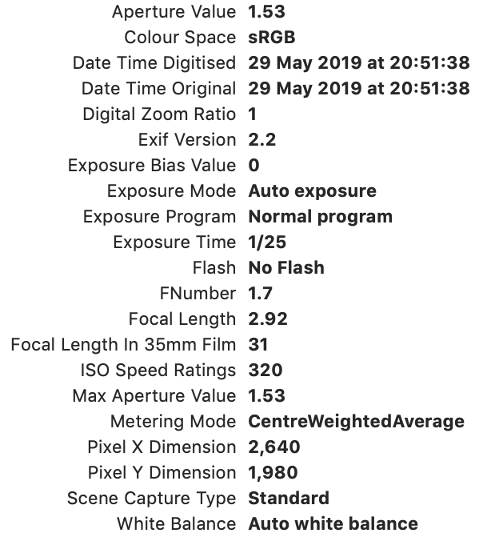

Chaque fichier photo contient des métadonnées appelées EXIF. C'est comme une carte d'identité de l'image.
| Type de donnée | Exemple concret |
|---|---|
| Matériel | Samsung Galaxy S22 ou Canon EOS |
| Réglages | Vitesse 1/500s, ISO 400 |
| GPS | Latitude et Longitude du lieu |
Ces données sont très utiles mais il faut faire attention à sa vie privée quand on les partage !